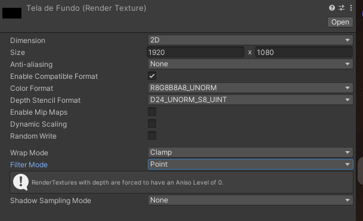

Existem várias formas de utilizar várias câmeras simultaneamente no Unity.
Coral Quest utiliza uma câmera principal que vê o nível, e uma câmera de background que somente vê o plano de fundo.
Para alcançar esse efeito, posicione sua tela de fundo em algum lugar em sua cena com uma câmera apontando para ela (garanta que a câmera não possua a tag ‘Main Camera’)
Em seguida, crie um Render Texture na aba de projeto, e o configure com as dimensões desejadas

Passe a render texture criada como textura de output da camera
Crie um canvas como objeto filho da câmera principal, e defina o modo de renderização como Screen Space - Camera
Crie uma Raw Image como filha do canvas em UI > Raw Image e utilize a render texture como textura
Por fim, defina a ancoração da imagem para stretch em ambas as direções, segurando alt para copiar a posição
Veja também outras formas de utilizar múltiplas câmeras: